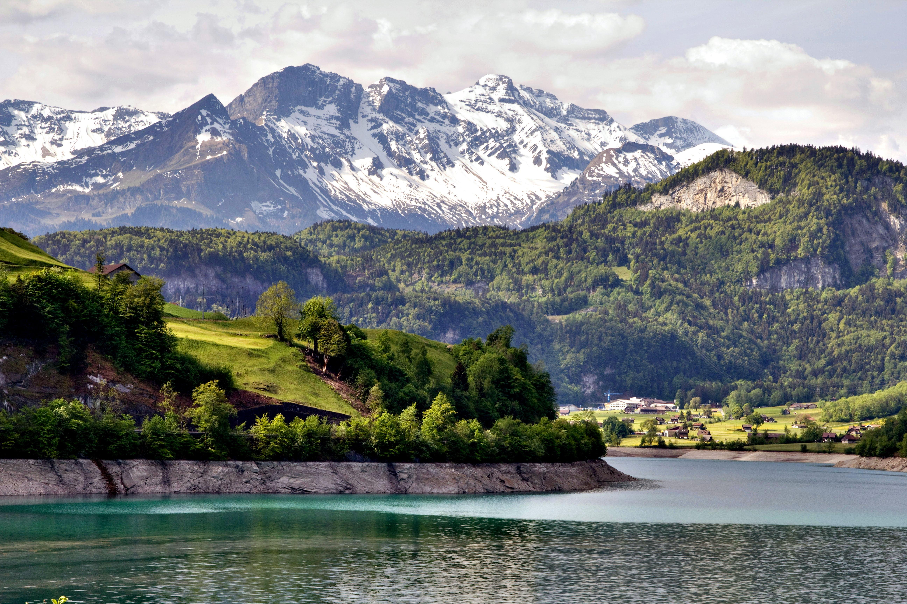
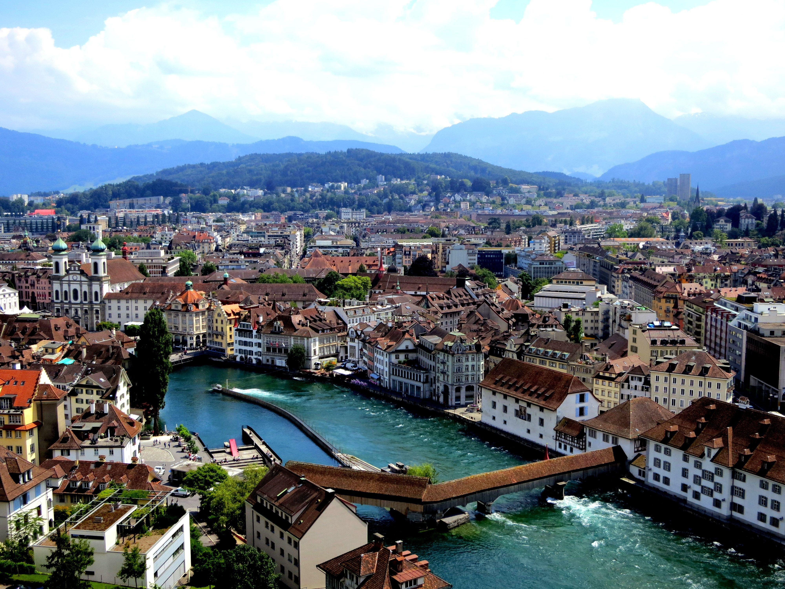
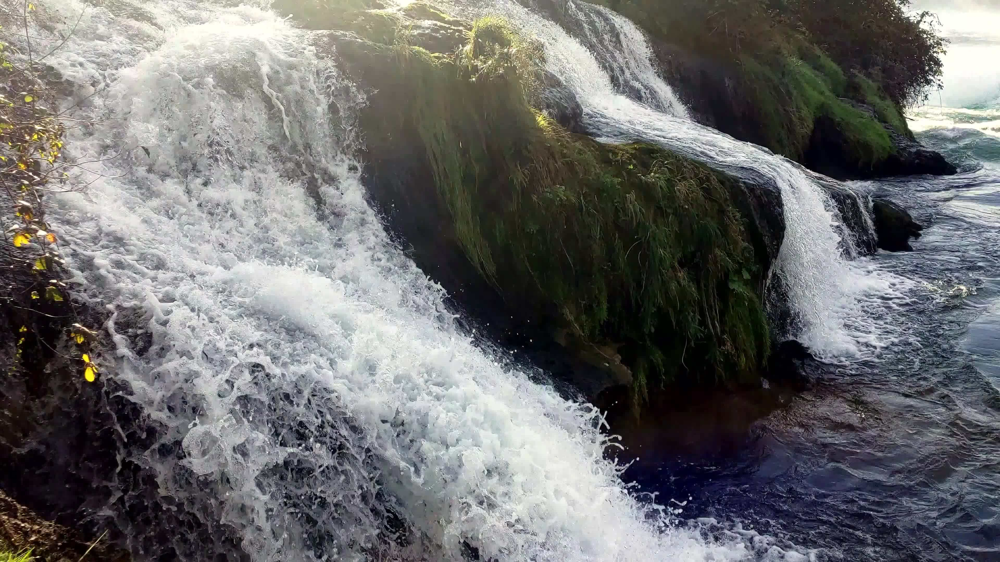
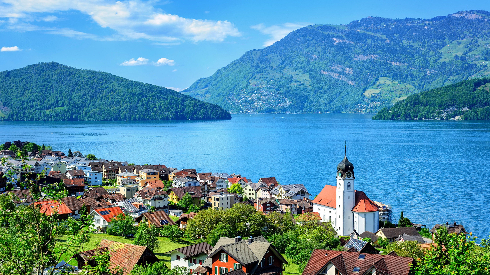
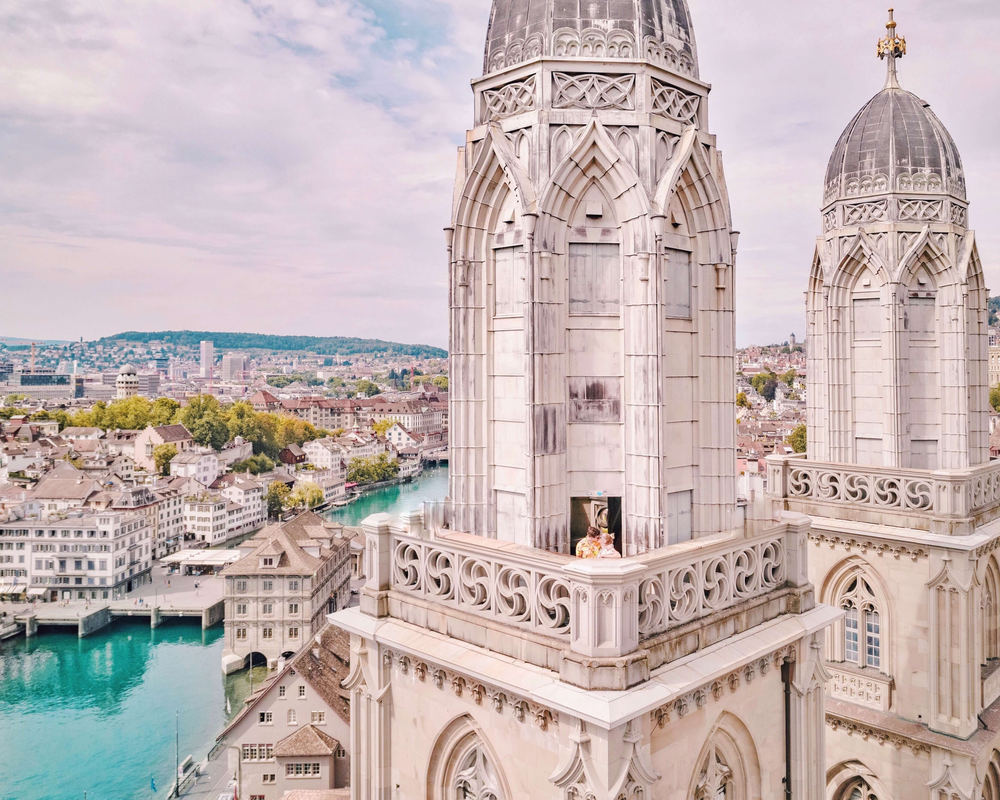
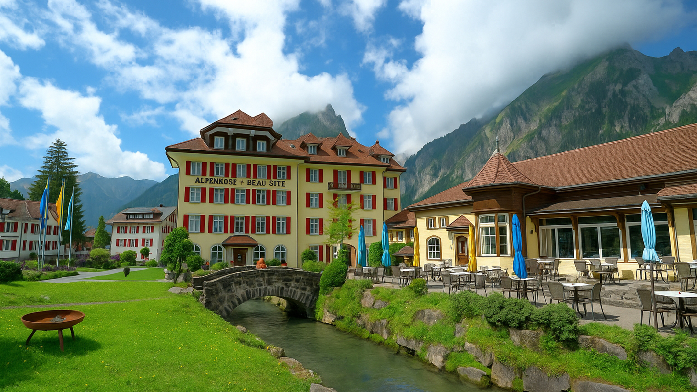
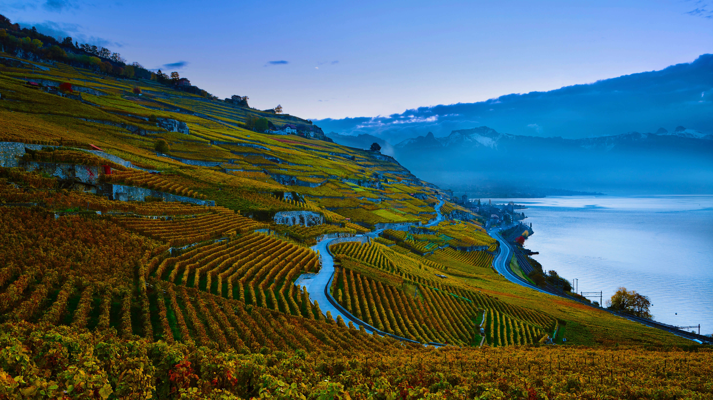
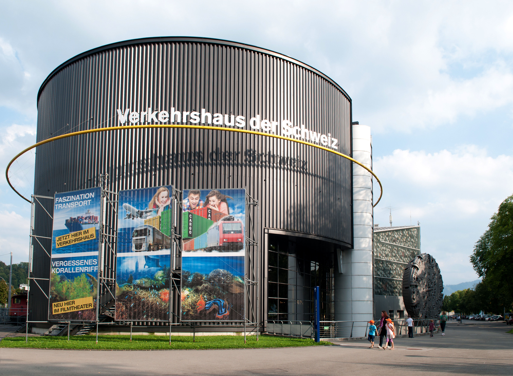

Highlights
Popular Destinations









Switzerland feels like a harmony between nature and precision, where every view seems crafted with quiet intention. Snow-capped peaks rise above green valleys, and lakes mirror the clarity of the sky. Life moves at a measured pace, blending tradition with innovation, and every village and city carries its own rhythm of calm and purpose.
Imagine standing beside a glacial lake as bells echo from distant pastures, or walking through cobbled lanes where the scent of chocolate and fresh bread fills the air. Trains glide past mountainsides dotted with chalets, and conversations drift in a blend of languages that reflect the country's rich heritage.
Morning mist settles over Switzerland's valleys as the first light touches snow-covered peaks. The air feels clean and still, carrying the scent of pine and woodsmoke from distant chalets. Lakes reflect the changing sky, and the rhythm of daily life unfolds with quiet precision and warmth.
As the day unfolds, mountain trails wind past wildflowers and waterfalls, and trains glide through tunnels carved into ancient rock. Cafés hum softly with conversation, and laughter mingles with the clinking of teacups and the smell of melted cheese.
Between towering peaks and shimmering lakes, life in Switzerland moves with quiet grace and purpose. The sound of church bells drifts through alpine villages, laughter echoes from hillside cafés, and the aroma of chocolate and fresh bread carries on the mountain air.
Explore charming markets, lakeside boutiques, and alpine workshops where Swiss craftsmanship flourishes. Discover finely made watches, hand-carved wooden toys, artisanal chocolates, and embroidered linens.
Savor Switzerland's rich culinary landscape through dishes like cheese fondue, rösti, and freshly baked bread served with mountain cheeses. Dining here is an act of comfort and connection.
Start your morning with a smooth espresso in a sunlit café or sip hot chocolate while watching snow fall beyond the window. In the evening, enjoy a crisp glass of local white wine or kirsch.
Traveling through Switzerland is both effortless and unforgettable, with trains, buses, and ferries connecting every corner of the country in perfect harmony.
Navigating Swiss cities is smooth and enjoyable, thanks to reliable public transport and walkable streets. Each city has its own rhythm: Zurich's modern pulse, Geneva's cosmopolitan charm, and Bern's timeless calm.
Outside the cities, Switzerland's landscapes invite endless exploration. Scenic drives lead to alpine meadows, crystal lakes, and villages where traditions remain woven into daily life.
Central European Time (CET), which is GMT+1, and observes daylight saving time from late March to late October.
Ride-sharing services such as Uber are available in most major Swiss cities, alongside efficient public transportation and reliable taxi services.
Switzerland uses 230V electricity with a frequency of 50Hz. Plug types C and J are standard, so travelers from other regions may need an adapter.
Switzerland's climate varies by altitude and region, offering crisp winters and pleasantly warm summers. Snow blankets the Alps from December to March, while lower valleys enjoy mild temperatures.
Switzerland's stunning natural settings have appeared in films such as The Girl with the Dragon Tattoo, On Her Majesty's Secret Service, and Point Break. The country has produced world-renowned figures including actor Bruno Ganz, tennis legend Roger Federer, and architect Le Corbusier.
Emergency Services: 112
Police: 117
Medical Emergency: 144
Fire Brigade: 118
Country Code: +41







